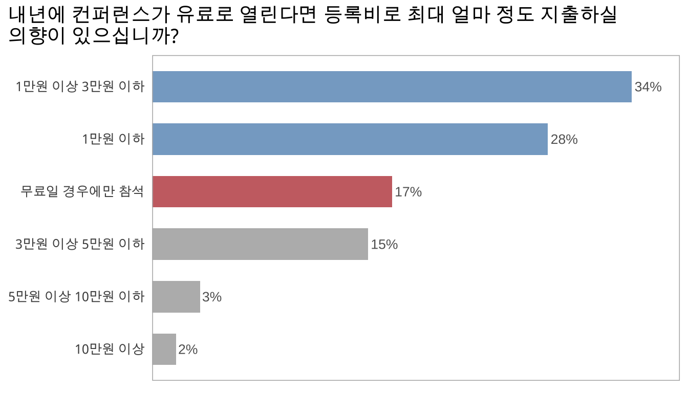

Section 5 내년 컨퍼런스 참석 의향
내년에도 컨퍼런스가 열리는 경우를 가정하여 참석 의향 및 바라는 점에 대한 설문입니다.
5.1 내년에 컨퍼런스가 열린다면 참석하실 의향이 있으십니까?
응답자의 3/5 정도가 온/오프라인 여부에 상관없이 참석할 것이라고 응답하였으며, 나머지 대부분은 온라인 컨퍼런스일 경우에만 참석할 것이라고 응답하였습니다.
5.2 내년 컨퍼런스에 발표자로 참여하실 의향이 있으십니까?
응답자 다섯 명 중 한 명은 내년 컨퍼런스에 발표자로 참석할 의향이 있다고 응답하였습니다.
5.3 주변 동료/지인들에게 내년 컨퍼런스 참석을 추천하실 것 같습니까?
주변에 컨퍼런스 참석을 추천하겠다는 응답이 압도적이었습니다.
5.4 내년에 컨퍼런스가 유료로 열린다면 등록비로 최대 얼마 정도 지출하실 의향이 있으십니까?
대부분의 응답자가 3만원 아래로 지출 의향을 표시하였으며, 특히 무료일 경우에만 참석하겠다는 응답도 17%나 되었습니다. 다음 컨퍼런스가 유료로 전환될 경우, 온라인/오프라인 참석 구분에 따라 참석비를 다르게 한다거나, 학생 혹은 비영리 단체 소속 참가자에게 할인을 제공하는 등의 다양한 방안을 고려해볼 필요가 있어 보입니다.

5.5 내년 컨퍼런스에 가장 개선되었으면 하는 부분은 아래 중 어떤 것입니까?
5.6 내년 컨퍼런스에 바라시는 점을 자유롭게 말씀해주세요.
앞의 “내년 컨퍼런스에 가장 개선되었으면 하는 부분”에 대한 질문과 연결되어 좀 더 구체적인 피드백들이 있었던 것으로 보입니다.